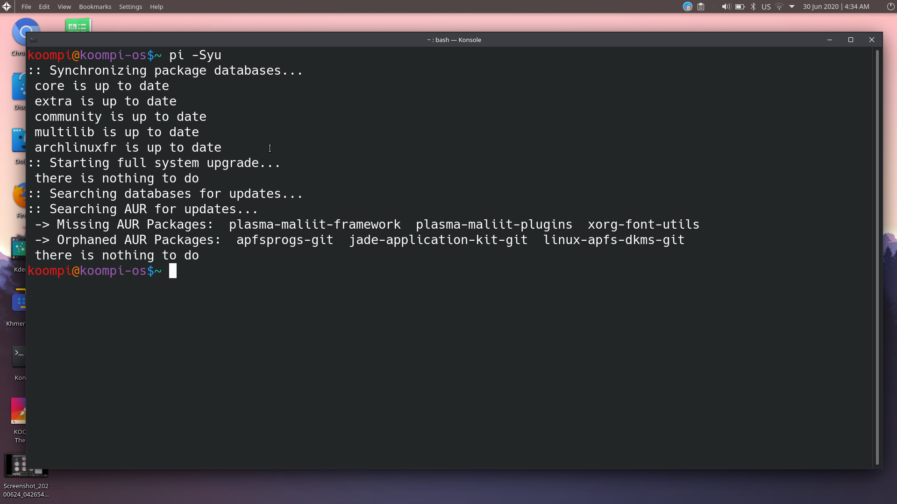
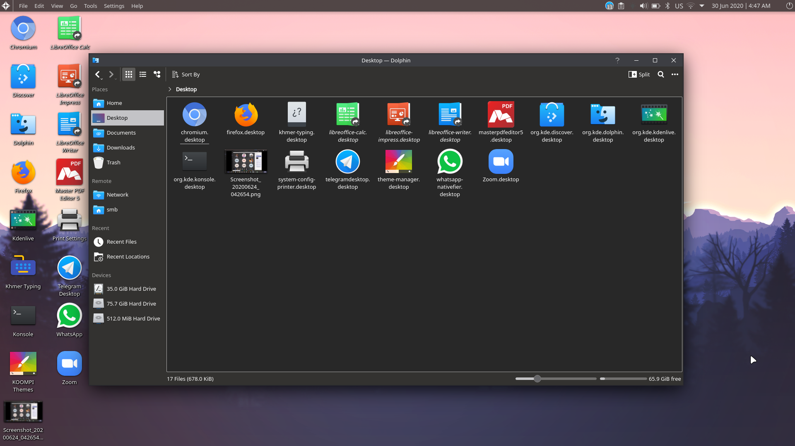
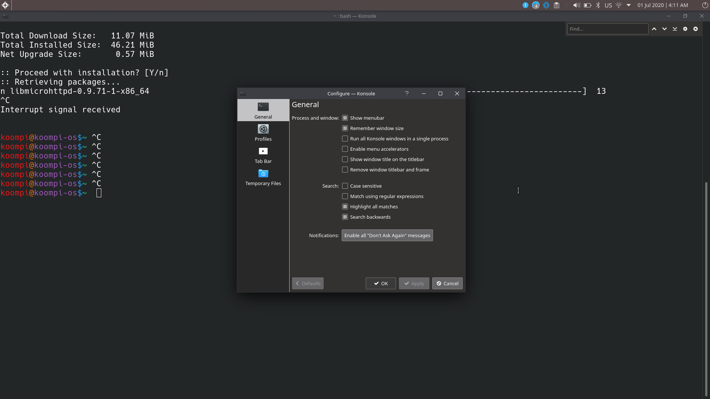

Konsole is the default terminal app of KDE Desktop Environment. In this article, we will introduce you about how konsole work. So, let’s get started.
Basics of Konsole Terminal:

To run a command, just type it in and press Enter . The command should run and print the output in the Konsole display like below.
For example, To update the system with command pi -Syu

Working with Tabs and Windows
To create a new tab, click on Left Side Corner > File > New Tab.
To create a new window, click on Left Side Corner File > New Window.

Once a new tab is created, it will show up in the tab bar down below in terminal as you can see in the image below. You can switch between them very easily.

You can also clone tab from Left Side Corner > File > Clone Tab.

To close a tab, click on Left Side Corner > File > Close Tab.
To close a window, click on Left Side Corner > File > Close Window.

You can also right click on a tab and detach (Detach Tab), rename (Rename Tab…) and close (Close Tab) the tab.

Opening File Manager in Current Working Directory
If you want to open the directory you’re currently in on the Konsole terminal with Dolphin file manager, click on Left Side Corner > File > Open File Manager.

The directory should be opened in Dolphin.

Printing and Saving Terminal Output
To save the output of Konsole terminal to a file, click on Left Side Corner > File > Save Output As

Now, select a location and a filename and click on Save.
You can click on the Filter dropdown menu and select between plain text document format (default) and HTML format.
Konsole output will be saved to a plain text file.
To print the output, click on Left Side Corner > File > Print Screen

If you have a printer connected, you can print. Otherwise, you can save it as a PDF file.
Searching Terminal Display
To search for text in the Konsole, click on Edit > Find
The searching bar will appear.
Copying and Pasting Text
-
To copy text, select the text, right click and select Copy.
-
To paste, right click and select Paste.
Enlarging Font, Shrinking font and Setting Character Encoding
-
To increase the font size on the fly, click on View > Enlarge Font
-
To decrease the font size on the fly, click on View > Shrink Font
you can use shortcut by hold Ctrl Key with + Key for increase and - Key for decrease.
Konsole Split View
To split the Konsole view horizontally, click on View > Split View > Split View Left/Right.
To split the Konsole view vertically, click on View > Split View > Split View Top/Bottom.

You can split Kosole horizontally or vertically.
For Horuzontally:

For Vertically:

Hiding Menubar and Fullscreen Mode
To hide the Konsole menubar, uncheck Settings > Show Menubar.
To display the menubar again, right click on the terminal and check Show Menubar.

To go to full screen, check Settings > Full Screen Mode.

Once you’re in full-screen mode, press F11 to exit out of full-screen mode.
Configuring Konsole
To configure Konsole global settings, go to Settings > Configure Konsole

From the General tab, you can configure default Konsole Window settings.
You can also configure the Default Search Settings from here.

You can also set custom environment variables if you want. Just click on Edit
From the Appearance tab, you can set a predefined Color Scheme or create a new one or customize an existing one. by Click on Setting > Edit Current profile > Appearance.

© Shahriar Shovon